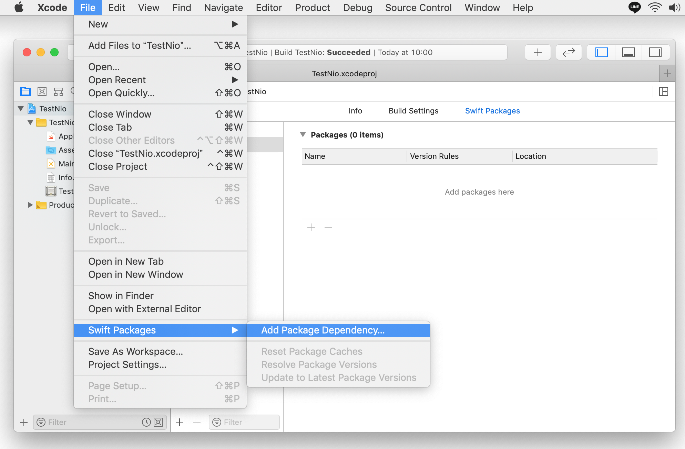
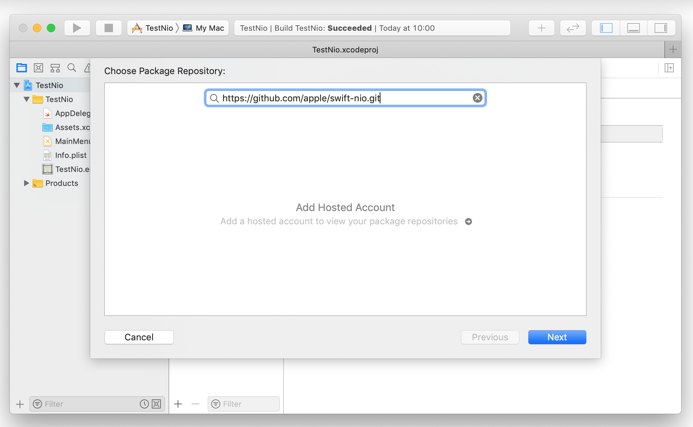
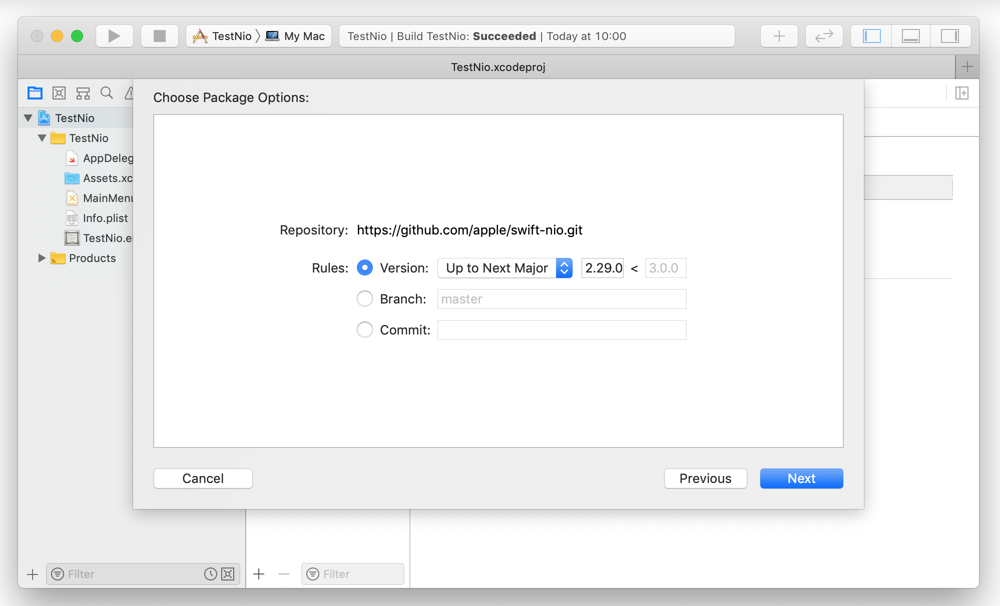
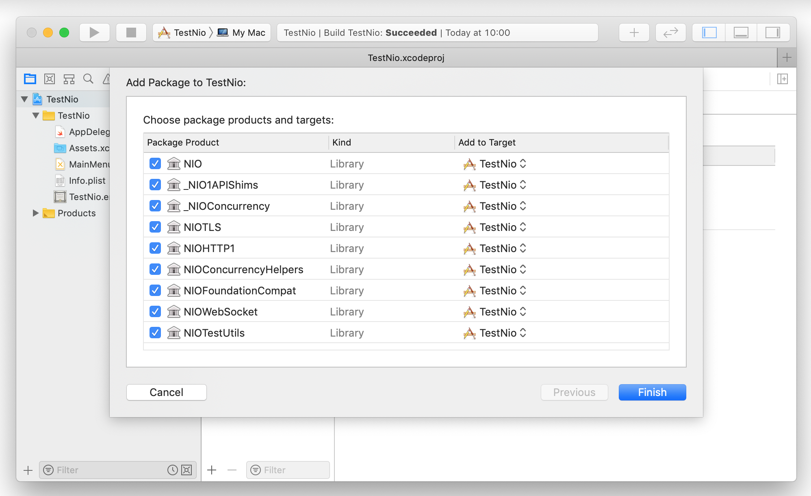
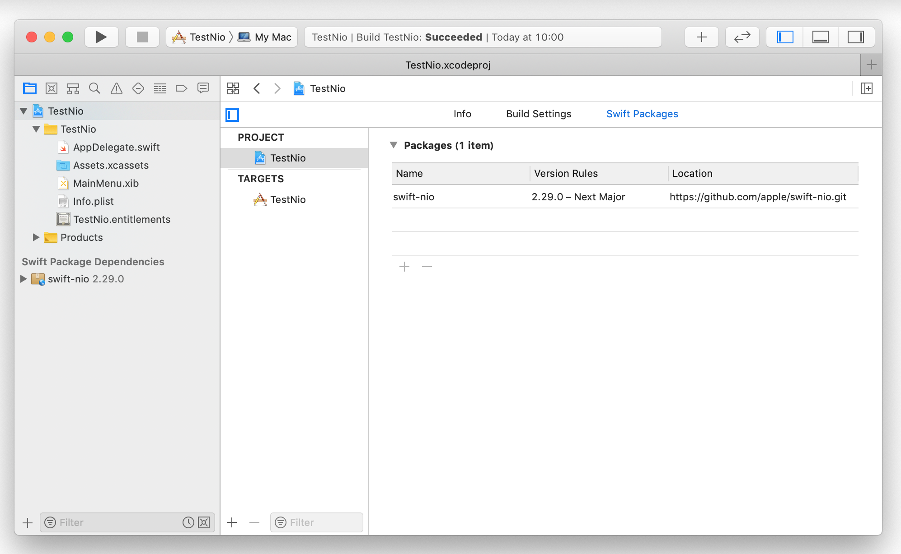
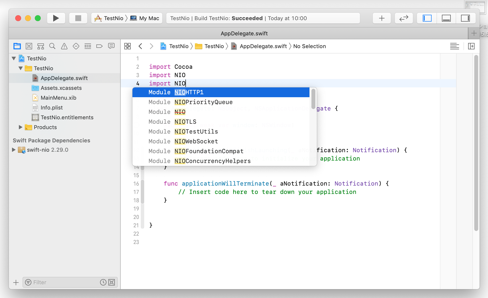

<!-- -->
<DOCTYPE HTML>
<html id="mainhtml">
<head>
  <meta http-equiv="Content-Type" content="text/html; charset=utf-8">
  <title>SwiftNIOをプロジェクトにインストールする</title>
  <link rel="stylesheet" type="text/css" href="/lib/document.css">
</head>
<body id="mainbody">
<!-- ↓↓↓↓↓↓↓↓↓↓↓ -->
<script type="text/javascript" src="/lib/funcs2.js"></script>
<!-- ↑↑↑↑↑↑↑↑↑↑ -->
<div id="content">
<h2 class="lm70 tm20 bm0">
SwiftNIOをプロジェクトにインストールする</h2>
<div class="lm70 tm10 rm60">
GitHubから swift-nio パッケージ 2.29.0 をプロジェクトに取り込みビルドする。全て Xcodeの UI で操作できる。
</div>

<h3 class="lm100 tm20 rm60 bm0">
Swiftパッケージの追加
</h3>
<!-- 画像 -->
<a href="/lib/HTMLofImage.html?filename=/data/C02/swiftnioXcode1.png&title=swiftnioXcode1&width=850" target="_new">
</a>

<h3 class="lm100 tm20 rm60 bm0">
リポジトリURLの入力
</h3>
<!-- 画像 -->
<a href="/lib/HTMLofImage.html?filename=/data/C02/swiftnioXcode2.png&title=swiftnioXcode2&width=850" target="_new">
</a>

<h3 class="lm100 tm20 rm60 bm0">
バージョン、ブランチの指定
</h3>
<!-- 画像 -->
<a href="/lib/HTMLofImage.html?filename=/data/C02/swiftnioXcode3.png&title=swiftnioXcode3&width=850" target="_new">
</a>

<h3 class="lm100 tm20 rm60 bm0">
プロダクトの選択/実行
</h3>
<!-- 画像 -->
<a href="/lib/HTMLofImage.html?filename=/data/C02/swiftnioXcode4.png&title=swiftnioXcode4&width=850" target="_new">
</a>

<h3 class="lm100 tm20 rm60 bm0">
ビルドの完了
</h3>
<!-- 画像 -->
<a href="/lib/HTMLofImage.html?filename=/data/C02/swiftnioXcode5.png&title=swiftnioXcode5&width=850" target="_new">
</a>

<h3 class="lm100 tm20 rm60 bm0">
ソースコードにインポートできるようになる
</h3>
<!-- 画像 -->
<a href="/lib/HTMLofImage.html?filename=/data/C02/swiftnioXcode6.png&title=swiftnioXcode6&width=850" target="_new">
</a>


<div class="bp40"></div><!-- 空白行 -->
<!----------------------------------------------->
</div><!-- end of content -->
<footer id="mainfooter">
<div class="tp10 bm10 bp10 textright"> <span class="rm500 font80"><a href="/lib/index2.html">メニューに戻る</a></span><span class="rm20 font80"><a href="#mainheader">TOPに戻る</a></span></div>
</footer>
<script type="text/javascript" src="/lib/access/access2.js"></script>
</body>
</html>


